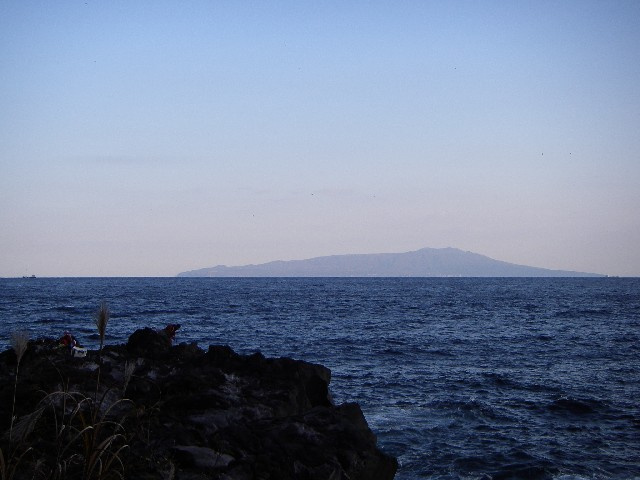

MU521 · 上海浦东 T1 → 成田 T2
11:45 — 15:55（当地时刻）
落地后乘 JR 特急 N’EX 到东京站，换 JR 一站到神田站，西口步行约 5 分钟到酒店。已定，不坐出租车。
七天六晚，三段住宿。下面是两段航班的准确信息与四个关键地点的地图入口。
11:45 — 15:55（当地时刻）
落地后乘 JR 特急 N’EX 到东京站，换 JR 一站到神田站，西口步行约 5 分钟到酒店。已定，不坐出租车。
14:30 — 17:20（当地时刻）
建议 11:30 前抵达羽田 T3。从酒店走二层连廊到 T-CAT，换机场巴士约 25 分钟。
Hotel Villa Fontaine Tokyo-Otemachi ｜ 1 晚 · 无餐。神田站西口步行约 5 分钟。
亀の井ホテル 伊豆高原 ｜ 2 晚。伊豆高原站乘免费接驳约 5 分钟（14:30）。
Royal Park Hotel Tokyo Nihonbashi ｜ 3 晚 · 无餐。二层连廊直通 T-CAT。
下方为 9/29 抓取的集合预报（会变），出发前一天以手机天气为准。真要下雨就按“备选”走，不硬冲。
东京 10/1 中雨 23/18℃ → 10/2 晴 23/14℃ → 10/3 多云 21/15℃ → 10/4 小雨 23/17℃。
伊豆 10/2 多云 24/16℃、10/3 多云 22/16℃，正好压在依赖天气的大室山与城崎海岸。
10/5 雨转阴 23/16℃、10/6 雨转阴 20/15℃、10/7 雨 21/16℃。带防风外套和伞。
大室山：大风/下雨/缆车停运 → 改伊豆泰迪熊博物馆或回酒店泡汤。
城崎海岸：下雨只走短段或直接取消。
东京塔：能见度差就改期或跳过，不硬上。
10/7：雨天走二层连廊 + 巴士，多留 15—30 分钟缓冲。
点地图直接跳 Google Maps；伊豆接驳与官方入口也放在对应卡片里。
东京大手町 · 1 晚 · 无餐
神田站西口步行约 5—8 分钟。首晚落地后走「N’EX → 东京站 → JR 一站神田」。
KAMENOI HOTEL IZUKOGEN · 2 晚
伊豆高原站樱并木口乘免费接驳约 5 分钟；站→酒店 14:30、15:00、15:30、16:20（以官网为准）。含早餐，晚餐自行安排。
东京日本桥 · 3 晚 · 无餐
水天宫前站直连，二层连廊通往 T-CAT；返程去羽田最方便。
跨城段已锁定指定席；伊豆当地以出租车为主；东京市内以地铁为主，带箱时不勉强换乘。
JR 特急 N’EX 指定席 + JR 一站
成田没有新干线。N’EX 到东京站后，保持在 JR 付费区内换山手线/京滨东北线，1 站到神田，西口步行 5 分钟到酒店。
特急踊り子 · 两段均已出票
去程 Odoriko 5：东京 10:00 → 伊豆高原 12:04（8 号车 7A/7B）。返程 Odoriko 4：伊豆高原 12:46 → 东京 14:49（1 号车 14C/14D，到站台 8）。乘车时在 KLOOK App 打开电子票并提前保存到设备。
出租车为主，公交为备
酒店到大室山约 10 分钟车程；大室山到门胁吊桥建议出租车，减少等车与长距离步行（当地公交约每小时一班）。
地铁 + 短程出租车
去东京塔由人形町乘日比谷线到神谷町；日本桥区域以步行为主。带箱转场直接打车。
首选机场巴士 · 成人 ¥1,000 · 约 25 分钟
酒店二层连廊步行到 T-CAT，本馆 1F 乘车。建议提前线上预约；遇停运或严重拥堵，改人形町乘都营浅草线换京急机场线。
点日期只看当天；每一天都有独立深链（#day-2026-10-01），可收藏、可分享给同行的人。
MU521 11:45 → 15:55 · 住大手町 1 晚
抵达浦东 T1 值机托运；确认护照、签证、Visit Japan Web 二维码。
MU521 飞往成田 T2。抵达后的时间均为日本时间预估，随入境进度顺延。
入境、取行李、过海关、开通手机网络；循机场「鉄道／Train／JR」指示下到地下铁路层。不需要去 T1。
在 JR 窗口或指定席售票机买 N’EX 普通车指定席，告诉工作人员「两位成人，N’EX 到东京站，接着 JR 去神田」。不能只刷 Suica 上 N’EX；不买往返票（回程从羽田走）；不预先锁死班次。
空港第2ビル站 → 东京站，乘车约 1 小时。Google Maps 可能列出其他列车，认准 N’EX。
N’EX 到达地下站台后，保持在 JR 付费区内，循「山手線／京浜東北線」标识及电梯前往地面站台，预留 15—25 分钟。不要先从八重洲口出站，也不要进新干线换乘闸机。乘山手线上野方向或停神田的京滨东北线，1 站约 2 分钟。
神田站西口步行 5—8 分钟到酒店，入住 Hotel Villa Fontaine Tokyo-Otemachi。以实际抵达为准，不为赶晚餐追车。
先放行李，再按饥饿程度和排队情况决定晚餐；饭后顺路去便利店买齐两人 10/2 的早餐和饮水，再回酒店休息。
居酒屋、肉料理 · 16:00—23:30（L.O. 22:30）· 周日休
人均约 ¥3,000—4,000
家系拉面 · 周一至周四 10:30—24:00 · 周日休
人均约 ¥1,000—1,500，排队太久就换店
老铺荞麦面 · 平日 11:00—20:30（L.O. 20:00）· 周日休
只在到店较早且仍接客时考虑，不作为晚到兜底
东京 10:00 → 伊豆高原 12:04 · 住龟之井 2 晚
退房，确认 KLOOK 电子特急票、护照、手机电量、行李。
酒店出发，步行到 JR 神田站西口，约 5—8 分钟。
刷 Suica 进站，乘山手线、京滨东北线或中央线快速任一「东京方向」列车，神田 → 东京仅 1 站。
抵达东京站后跟随「东海道线 / Limited Express Odoriko」标识；实际站台通常在临近发车前显示。
买便当和饮料，提前到站台等车。主推 駅弁屋 祭（改札内 1F 中央通路・グランスタ内，5:30—23:00，约 200 种）；预算有限可在京葉ストリートエリア买千元以下便当（塚田農場鸡南蛮 ¥980、魚力海鲜寿司 ¥990 等）。
乘 Odoriko 5 到伊豆高原，8 号车 7A／7B。
抵达伊豆高原站，先确认樱并木口／北口方向和酒店接驳点；车站周边吃午饭。
轻松等车，必要时使用车站寄存柜。
乘亀の井ホテル 伊豆高原免费接驳，约 5 分钟到酒店。15:00 后入住、泡汤、休息。
鲔鱼与地鱼料理、寿司 · 步行约 7 分钟 · 11:30—15:30（L.O. 14:45）
人均午餐约 ¥2,000—2,999 · 周三休 · 评分 4.4
回转寿司 · 伊豆高原站步行约 8 分钟
排队可见机行事，适合临时决定
食事処右近（步行约 10 分钟，和食定食/拉面）
ぐり茶の杉山 伊豆高原店（甜点，步行约 18 分钟）
出租车为主 · 缆车票当天买
早餐，确认大室山 Operation Status、风速、降雨和能见度。
从酒店出发，出租车到大室山（约 10 分钟）。
大室山缆车上山、山顶环形步道；风大则缩短停留。乘车口前窗口购票，可用现金/信用卡/电子货币/二维码。
午餐或咖啡休息。
前往城崎海岸、门胁吊桥；若天气变差，改为只走城崎海岸短段或直接回酒店。
返回酒店，泡汤、休息。晚餐在酒店周边轻松安排（本家鮪屋等，见 10/2 列表）。
大室山缆车乘车处 1F（大室山リフト館）· 每日 10:00—16:00（L.O. 15:30）
人均 ¥1,000—1,999 · 缆车停运时休息 · 不可预约 · 全席禁烟
伊豆泰迪熊博物馆（伊豆高原站一带）· 或直接回酒店泡汤
缆车停运 / 风雨大时使用
Odoriko 4 12:46 → 东京 14:49 · 住日本桥 3 晚
早餐、收拾行李、退房。
酒店接驳或出租车到伊豆高原站；12:20 前到站，预留买饮料、确认站台和打开 KLOOK 电子票的时间。
乘 Odoriko 4 到东京站。1 号车 14C／14D。
入住 Royal Park Hotel Tokyo Nihonbashi；下午／晚上人形町、日本桥周边散步，便利店补给，整理后半程行李。
轻松城市日 · Main Deck 看天气买
早餐后出发，地铁前往大门／御成门／赤羽桥一带。
增上寺、芝公园散步，拍东京塔视角。
午餐（赤羽桥／神谷町一带，当天再定）。
媳妇想去的店 · 半日线 · 晚上打包
酒店早餐后出发，从水天宫前／人形町乘地铁去代代木上原或代代木公园一带，不带大件行李。
Acid Coffee Tokyo：先喝咖啡；若排队或当天未营业，改去 Fuglen Tokyo。
Asterisque：优先买 2—3 款甜品现场吃或带回酒店；出发前看官方 Instagram／公告确认营业。
代代木上原／富ヶ谷周边轻午餐，不排大餐，给下午甜品留胃。
Théobroma 渋谷本店（富ヶ谷 1-14-9，10:00—19:00，年中无休）买巧克力 → Fuglen Tokyo 喝咖啡 → Nata de Cristiano 买蛋挞带走。按排队情况取舍。
回 Royal Park Hotel 休息并整理行李，液体和充电宝分开放好。
轻松晚餐；确认第二天 T-CAT 步行路线和机场巴士时间。
富ヶ谷 1-14-9 · 代代木公园站 2 号出口步行 4 分
10:00—19:00（L.O. 18:15）· 年中无休
代代木上原一带的甜品店 · 当天以官方公告为准
建议上午去，热门款容易售罄
三家都在同一片区，步行串联；Fuglen 兼作 Acid 的备选
Nata de Cristiano 买蛋挞带走，适合当伴手礼
MU538 14:30 → 17:20
早餐、退房、确认行李和护照。
从酒店二层连廊步行到 T-CAT（东京城市航空总站）。
乘 T-CAT 机场巴士到羽田 T3（成人 ¥1,000，约 25 分钟）；若当天堵车预警明显，改地铁／京急方案。本馆 1F 乘车，建议提前线上预约。
到达羽田 T3，办理托运和值机。
安检、出境、退税／购物、午餐。
MU538 返回上海。雨天请多留 15—30 分钟缓冲。
只保留伊豆高原、富戸、八幡野与伊东市街一带的选项，已剔除热海与箱根。评分来自じゃらんnet 用户评价，括号内为评价件数；件数少于 50 的分数波动较大。除川奈彩绘玻璃美术馆（10:00—16:30）与大室山，其余开馆时间与定休日请在出门前用地图确认。
位置：伊东市川奈 · 酒店车程约 25 分钟（无直达巴士，建议打车）。门票：成人 ¥1,400。时间：10:00—16:30。
1800 年代英国彩绘玻璃约 300 点，整点有管风琴与八音盒演奏，馆内附设意大利餐厅。
位置：富戸 · 酒店车程约 10 分钟（巴士「栗の原」下车）。看点：约 270 件。
象牙雕刻、世界最大宝石屏风与翡翠雕刻；件数多、分数稳，10/3 顺路加一站最合适。
位置：八幡野 · 酒店车程约 8 分钟（伊豆高原站步行 9 分）。门票：成人 ¥1,700～（じゃらん券减 ¥100）。
古董泰迪熊加龙猫展，全室内、雨天最稳；抵达日下午半天最省事的一站。
位置：八幡野 · 酒店车程约 8 分钟（伊豆高原站步行 10 分）。门票：免费。
现代艺术画廊＋手作店＋咖啡，本地文化资料；就在城崎海岸方向，顺路。
位置：赤沢 · 伊豆高原站有免费接驳约 15 分钟。价格：入馆 ¥1,400～，夜间 ¥1,000～。
酒店只含早餐，想泡汤这里最顺；接驳时间出发前先确认。
位置：富戸 · 酒店车程约 15 分钟（巴士「大室高原九丁目」即到）。
现场吹制玻璃杯，成品可带走；旁边就是伊豆仙人掌动物公园与古兰帕鲁公园。
按「现在买、临近买、当天买」排序。每项都写清入口、步骤和截止建议；完成后把确认页截图离线保存。
去程：10/2 Odoriko 5，东京 10:00 → 伊豆高原 12:04；成人 2 人，8 号车 7A／7B，实付 ¥512.00。
返程：10/4 Odoriko 4，伊豆高原 12:46 → 东京 14:49；成人 2 人，1 号车 14C／14D，合计 ¥512.00；东京站到达站台 8。
待办：两张电子票都保存到设备，出发前确认 KLOOK App 可离线打开。
使用：10/1 入境后乘最近合适班次。返程从羽田走，不买 N’EX 往返票。
建议时间：10/1 通关后现场买，不提前绑死班次；航班延误或通关慢也不慌。
使用：10/3。乘车口前窗口售票，票仅限购买当日有效；10 月通常 09:00—16:00 营业，山顶末班 16:15，以当日运行公告为准。
建议时间：不提前买；成人往返 ¥1,000，出发前再复核。
使用：10/5 下午。官网可提前购买 Main Deck 电子票，减少现场排队；若天气差，也可当天在 Foot Town 1F 售票处决定。
建议时间：10/2—10/4 看东京能见度后再买；当前成人 Main Deck ¥1,500。
使用：10/7。官方从乘车日前 1 个月开放线上预约。成人单程 ¥1,000，车程约 25 分钟，需为道路拥堵留足余量。
建议时间：现在即可买；建议最迟 10/6 完成。现场也可在 T-CAT 1F 柜台或售票机买，满员需等下一班。
使用：东京地铁、JR 普通线和多数便利交通。它们不是本次需要提前锁定的票。
建议时间：10/1 落地后处理；出发前只需准备一张可境外支付银行卡和少量现金。
只处理会影响成行的事项。价格、班次和天气会变化，页面保留决策规则，不写死未经确认的信息。
出发前 30—7 天：两段踊り子已出票，确认 T-CAT 巴士；同时确认酒店餐食／接驳、保险、eSIM 和常用 App。
出发前 72—24 小时：复核航班与天气；确认大室山运行公告、T-CAT 巴士、酒店地址；下载地图和订单截图。生成 Visit Japan Web 二维码。
每日随身：护照、手机、充电宝、银行卡、现金、交通卡、雨具与常用药。伊豆海岸穿防滑鞋，不穿新鞋。
公开页面边界：不上传订单号、护照、姓名、电话、房号和二维码。私人凭证只保存在本地或可信云盘。
照片使用仓库内本地 JPG，避免线上热链失效。
